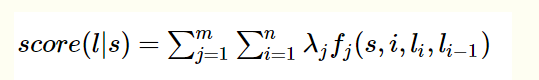

CRF（条件随机场）
CRF中的特征函数，它接受四个参数：
* 句子s（就是我们要标注词性的句子）
* i，用来表示句子s中第i个单词
* l_i，表示要评分的标注序列给第i个单词标注的词性
* l_i-1，表示要评分的标注序列给第i-1个单词标注的词性
它的输出值是0或者1,0表示要评分的标注序列不符合这个特征，1表示要评分的标注序列符合这个特征。
Note:这里，我们的特征函数仅仅依靠当前单词的标签和它前面的单词的标签对标注序列进行评判，这样建立的CRF也叫作线性链CRF，这是CRF中的一种简单情况。为简单起见，本文中我们仅考虑线性链CRF。
定义好一组特征函数后，我们要给每个特征函数 f_j 赋予一个权重 λ_j 。现在，只要有一个句子s，有一个标注序列 l，
我们就可以利用前面定义的特征函数集来对l评分。

上式中有两个求和，外面的求和用来求每一个特征函数f_j评分值的和，里面的求和用来求句子中每个位置的单词的的特征值的和。
对这个分数进行指数化和标准化，我们就可以得到标注序列l的概率值p(l|s)，如下所示：

例子：

当 l_i 是“副词”并且第i个单词以“ly”结尾时，我们就让 f1 = 1，其他情况f1为0。不难想到，f1特征函数的权重λ1应当是正的。
而且λ1越大，表示我们越倾向于采用那些把以“ly”结尾的单词标注为“副词”的标注序列

当l_i-1是介词，l_i是名词时，f3 = 1，其他情况f3=0。λ3也应当是正的，并且λ3越大，说明我们越认为介词后面应当跟一个名词。

如果 l_i 和 l_i-1 都是介词，那么f4等于1，其他情况f4=0。这里，我们应当可以想到λ4是负的，并且λ4的绝对值越大，
表示我们越不认可介词后面还是介词的标注序列。
DBN
如图所示，以3层隐藏层结构的DBN-DNN为例，网络一共由3个受限玻尔兹曼机（RBM，Restricted Boltzmann Machine）单元堆叠而成，其中RBM一共有两层，上层为隐层，下层为显层。堆叠成DNN的时，前一个RBM的输出层（隐层）作为下一个RBM单元的输入层（显层），依次堆叠，便构成了基本的DBN结构，最后再添加一层输出层，就是最终的DBN-DNN结构。

RBM（受限玻尔兹曼机）
RBM记住三个要诀：
1）两层结构图，可视层和隐藏层；
2）同层无边，上下层全连接；
3）二值状态值，前向反馈和逆向传播求权参。
定义如下：
RBM包含两个层，可见层（visible layer）和隐藏层（hidden layer）。
神经元之间的连接具有如下特点：层内无连接，层间全连接，显然RBM对应的图是一个二分图。
一般来说，可见层单元用来描述观察数据的一个方面或一个特征，而隐藏层单元的意义一般来说并不明确，可以看作特征提取层。
RBM和BM的不同之处在于，BM允许层内神经元之间有连接，而RBM则要求层内神经元之间没有连接，因此RBM的性质：当给定可见层神经元的状态时，各隐藏层神经元的激活条件独立；反之当给定隐藏层神经元的状态时，可见层神经元的激活也条件独立。